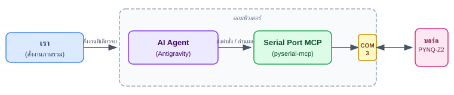
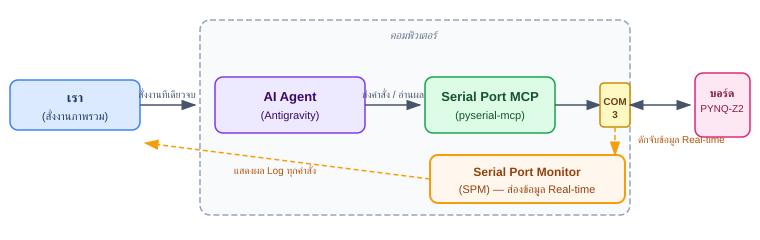

AI Debug with SPM: ลองใช้ AI Agent ดีบักฮาร์ดแวร์ PYNQ-Z2 ผ่าน Serial Port MCP + Serial Port Monitor
1 Overview
ในยุคนี้เราหลายคนเริ่มใช้ AI เข้ามาเป็น Coding Assistant คอยช่วยคิดโค้ดหรือแก้ปัญหาการทำงาน ยิ่งเวลาพัฒนาฮาร์ดแวร์แล้วเจอบั๊ก รันไม่ผ่าน หรือไม่รู้จะไปต่อยังไง สิ่งแรกที่นักพัฒนาสาย Embedded มักจะทำก็คือ: ถาม AI → ได้คำตอบมา → ก๊อบปี้คำสั่งไปลองรันบนบอร์ด ซึ่งเป็นวงจรที่ทุกคนน่าจะคุ้นเคยกันดี (The Manual Copy-Paste Loop)
ขั้นตอนการทำงานโดยทั่วไปก็จะเป็นประมาณนี้ครับ:
- พอเจอบั๊กบนบอร์ด รันไม่ผ่าน ก็เปิดเบราว์เซอร์ไปถาม AI (ChatGPT, Claude หรือ Gemini)
- พอ AI ตอบคำสั่งหรือสคริปต์มา เราก็กด Copy
- สลับหน้าจอมาที่โปรแกรม Terminal (Tera Term หรือ PuTTY) แล้ว Paste คำสั่งลงไป
- พอบอร์ดรันแล้วพ่น Log ออกมา หรือติด Error สีแดงยาวเหยียด เราก็ลากคลุมแล้ว Copy ผลลัพธ์นั้น
- สลับกลับไปหน้าจอ AI เพื่อ Paste ถามต่อ... AI ก็จะบอกว่า "อ๋อ ลองรันคำสั่งนี้ดูสิ" หรือ "ลองแก้ไฟล์นี้ดู"
- แล้วเราก็ก๊อบ วาง รัน ก๊อบ วาง รัน... วนลูปไปเรื่อยๆ
ภาพรวมการเชื่อมต่อจึงมีลักษณะเป็นแบบนี้ครับ:
graph LR
AI["AI Chat (ChatGPT / Claude / Gemini)"]
User["เรา (คนคอยก๊อบแปะ)"]
subgraph PC ["คอมพิวเตอร์ของเรา"]
TeraTerm["Tera Term"]
COM3["พอร์ต COM3"]
end
Board["บอร์ด PYNQ-Z2"]
User <--> |ถาม-ตอบคำสั่ง| AI
User <--> |Copy & Paste| TeraTerm
TeraTerm <--> COM3
COM3 <--> Board
ถ้าคำสั่งที่ AI แนะนำมาแก้ปัญหาได้จบทันทีในรอบเดียวก็คงไม่มีอะไร... แต่ในความเป็นจริงของงานฮาร์ดแวร์ พอลองแล้วติด Error ใหม่ หรือแก้จุดนี้แล้วไปกระทบจุดนู้น มันก็จะเกิด ลูปของการก๊อบแปะ (The Copy-Paste Loop) วนซ้ำไปซ้ำมาหลายรอบ:
sequenceDiagram
actor User as เรา (Human Router)
participant AI as AI Chat
participant Terminal as Tera Term (COM3)
participant Board as บอร์ด PYNQ-Z2
loop วนลูปซ้ำๆ ไปเรื่อยๆ (The Copy-Paste Loop)
User->>AI: 1. ส่งคำถาม / บั๊กที่เจอ
AI-->>User: 2. แนะนำคำสั่ง Linux ให้ลองรัน
User->>Terminal: 3. สลับหน้าจอ Copy คำสั่งไป Paste & รัน
Terminal->>Board: 4. ยิงคำสั่งเข้าบอร์ดผ่าน Serial
Board-->>Terminal: 5. บอร์ดพ่น Log / Error ออกมา
Terminal-->>User: 6. หน้าจอแสดงผล Log ยาวเหยียด
User->>AI: 7. ลากคลุม Log ก๊อบกลับไปถาม AI ใหม่อีกรอบ
end
จะเห็นได้ชัดว่า ในกระบวนการนี้สิ่งที่เราทำเป็นหลักไม่ใช่การลงมือดีบัก แต่คือการทำตัวเป็น "Human Router" คอยก๊อบปี้ข้อความไปๆ มาๆ ข้ามหน้าจอ แล้วปล่อยให้ AI คิดวิเคราะห์ให้ ผมเลยคิดว่า:
2 Serial Port MCP
พอดีช่วงนี้ผมเห็นว่าเริ่มมีคนพัฒนา Model Context Protocol (MCP) สำหรับสื่อสารผ่าน Serial Port ออกมาแล้ว ก็เลยเกิดไอเดียขึ้นมาทันทีว่า:
"แล้วเราจะมานั่งเมื่อยก๊อบแปะทำไม ในเมื่อเราสามารถมอบเครื่องมือ (Tools) ให้ AI ต่อสายคุยตรงเข้า Serial Console ของบอร์ดได้เองเลย?"
จากลูปเดิมที่คนต้องคอยเป็นคนกลางรับส่งข้อความ โครงสร้างใหม่ก็เลยเปลี่ยนมาเป็นแบบนี้ครับ:
เราใช้ AI Agent (รอบนี้ผมใช้ Antigravity) เชื่อมต่อเข้ากับ Serial Port MCP ให้มันเปิดพอร์ตและสั่งการตรงเข้าพอร์ต COM3 ของบอร์ด PYNQ-Z2 ได้เองโดยอัตโนมัติ

คราวนี้หน้าที่ของเราจะสบายขึ้นเยอะครับ เราเปลี่ยนบทบาทมาเป็น "ผู้สั่งการระดับภาพรวม" เพียงอย่างเดียว เช่น ป้อน Prompt สั้นๆ บอกเป้าหมายไปว่า:
I have connected the PYNQ-Z2 board to the COM3 serial port. Please provide information about the board.
ผลลัพธ์คือ AI มันจัดการเปิด COM Port ส่งคำสั่งเข้าไปสำรวจเครื่อง อ่านผลลัพธ์ แล้วสรุปข้อมูลระบบทั้งหมดของ PYNQ-Z2 กลับมาให้เราแบบสวยงามในหน้าแชตแบบนี้เลยครับ:

3 Serial Port Monitor
แต่เดี๋ยวก่อน... พอมันสรุปข้อมูลออกมาอย่างสวยงาม คำถามสำคัญที่คนทำฮาร์ดแวร์ต้องเอะใจทันทีก็คือ:
"AI มันไปทำอะไรมาบ้าง ถึงได้ข้อมูลพวกนั้นออกมา?"
ในหน้าแชต AI มักจะหยิบเฉพาะผลลัพธ์สุดท้ายมาจัดรูปแบบให้อ่านง่าย แต่เราไม่เห็นเลยว่าเบื้องหลังมันพิมพ์คำสั่ง Linux อะไรลงไปบ้าง รันสคริปต์อะไร หรือแอบไปยุ่งกับไฟล์ไหนในระบบ (จริงอยู่ว่าเราอาจสั่งให้ AI ช่วยสรุปคำสั่งที่มันใช้มาให้ดูได้ แต่มันก็ไม่ได้เห็น Message ดิบๆ ที่โต้ตอบกันจริงแบบ Real-time อยู่ดี)
เพราะฉะนั้น เราจึงต้องการเครื่องมือเข้ามาช่วย "แอบส่องดู (Monitor/Sniff)" ว่า AI กำลังคุยอะไรกับบอร์ดอยู่แบบตัวอักษรต่อตัวอักษรครับ
3.1 Serial Port Monitor (SPM)
ซอฟต์แวร์ประเภท Serial Port Monitor บน Windows มีให้เลือกอยู่หลายตัวครับ แต่จากการทดลองใช้มาหลายตัว ตัวที่ติดตั้งง่ายและจบปัญหานี้ได้ดีที่สุดคือ Serial Port Monitor (SPM) (ใครสนใจไปลองโหลดดูได้ที่: https://www.com-port-monitoring.com/)
คอนเซปต์ก็จะกลายเป็นแบบนี้ครับ เราสั่งงาน AI เหมือนเดิมทุกประการ เพียงแต่เพิ่ม SPM เข้ามาช่วยดักดูทราฟฟิกข้อมูลแบบ Real-time:

3.2 มาลองของจริงกัน
เพื่อให้เห็นภาพชัดๆ ว่าพอเอามาทำงานร่วมกันแล้วเจ๋งแค่ไหน มาดูการทดลองจริงกันเลยครับ
3.2.1 ลองรอบที่ 1: สั่งให้ AI สำรวจข้อมูลบอร์ด (System Discovery)
ตอนที่ผมส่ง Prompt ไปบอกให้มันหาข้อมูลบอร์ด:
I have connected the PYNQ-Z2 board to the COM3 serial port. Please provide information about the board.
พอเหลือบไปมองหน้าต่าง Serial Port Monitor ขณะที่ AI กำลังหมุนติ้วๆ คิดอยู่ เราจะเห็นทุกคำสั่งที่มันยิงเข้าบอร์ดแบบสดๆ เลยครับ:

ตัวอักษรสีแดงคือข้อความ/คำสั่งที่ AI ส่งไป ส่วนสีน้ำเงินคือข้อความตอบกลับจากบอร์ด PYNQ-Z2
จะเห็นได้ชัดเลยว่า AI ทำงานอย่างเป็นสเต็ปอย่างเป็นระเบียบมาก:
- เริ่มจากลองเช็กก่อนเลยว่ามีไลบรารี PYNQ ติดตั้งอยู่ไหม:
python3 -c "import pynq..." - เช็กเวอร์ชัน Python และดูโครงสร้างไดเรกทอรี:
which python3; python3 --version; ls -la /home /opt - เช็กสิทธิ์ผู้ใช้และสถานะ SD Card:
whoami; uptime; ls -l /run/media/mmcblk0p1 - วิ่งไปแอบดูข้อมูลชิป Zynq ใน sysfs:
cat /sys/devices/soc0/* 2>/dev/null
พอมันกวาดข้อมูลจนครบทุกอย่างแล้ว มันค่อยนำผลลัพธ์มาจัดเป็นตารางสวยๆ ส่งกลับมาในหน้าต่างแชตของ Antigravity ให้เราดู
3.2.2 ลองรอบที่ 2: ของจริงเริ่มตรงนี้! สั่งดีบัก hardware ของเรา
คราวนี้ผมลองให้โจทย์ที่ยากขึ้นมาหน่อย โดยอ้างอิงจากบทความที่เคยเขียนเรื่องการทำระบบวิดีโอบน PYNQ-Z2:
(https://wichayen.github.io/fpgathailand/pynq_z2_video.html)
ผมโยน Prompt ไปสั่งให้ AI ช่วยตรวจสอบและดีบักระบบ Framebuffer ของหน้าจอ HDMI ให้หน่อย:
I have built my PYNQ-Z2 following this guide:
https://wichayen.github.io/fpgathailand/pynq_z2_video.html
The board should have a framebuffer for controlling the HDMI output.
Could you please try to inspect and debug the framebuffer functionality?
AI ก็จะเข้าไปจัดการทดสอบตามโจทย์ที่เราสั่ง แต่ความเจ๋งคือเราสามารถเปิด SPM ดูได้ตลอดเวลาว่ามันกำลังทำอะไรอยู่เบื้องหลัง:

และนี่คือผลลัพธ์บนจอมอนิเตอร์จริง มีแถบสี Colorbar แสดงขึ้นมาเลยครับ:


คราวนี้พอลองท้าทายให้ AI สร้างโปรแกรมตัวอย่าง (Example) เพิ่มเติม เพื่อทดสอบการเรนเดอร์ภาพเคลื่อนไหวบนหน้าจอ HDMI มันก็จัดชุดใหญ่ไฟกระพริบให้ตามนี้เลยครับ:


วิดีโอสาธิตการทำงานจริงบนจอ HDMI:
Starfield Warp 3D Perspective (รันด้วยภาษา C + GCC บน PYNQ-Z2)
Matrix Digital Rain 60 FPS (สร้าง Bitmap Font 8x8 เขียนตรงลง Framebuffer)
และที่สำคัญที่สุดคือ พอเรามี SPM เราก็จะรู้ได้อย่างแม่นยำว่า AI ไปสร้างไฟล์อะไรไว้ที่โฟลเดอร์ไหนบ้าง
พอมันทำงานเสร็จ คำถามยอดฮิตคือ "แล้วไฟล์โค้ดพวกนี้มันไปแอบสร้างไว้ตรงไหนล่ะ?"
ถ้าไม่มี SPM เราคงต้องมานั่งไล่ถาม AI อีกรอบ แต่เพราะเราเปิด SPM ส่องไว้อยู่ตลอด เราจึงเห็นชัดเจนว่าไฟล์ทั้งหมดถูกเก็บไว้ที่ /home/petalinux/
พอ AI ปล่อยพอร์ต Serial เสร็จ เราก็แค่เปิด Tera Term กลับเข้าไปดูไฟล์ต้นฉบับ ลองรันเล่นเอง หรือจะหยิบเอาโค้ดภาษา C ที่ AI เขียนไว้มาต่อยอดได้ทันทีครับ

/home/petalinux/ ผ่าน Tera Termจริงๆ ถ้าเราถาม AI ในแชต มันก็น่าจะพอสรุปมาให้ได้ว่าสร้างไฟล์อะไรไว้ที่ไหนบ้าง แต่การเห็นคำสั่ง compile และ path ตัวจริงผ่าน SPM แบบสดๆ ได้อารมณ์มากกว่าและมั่นใจได้ 100% ว่าไม่มีอะไรแอบแฝง
4 สรุปส่งท้าย
การจับ AI มาต่อเข้ากับ Serial Port MCP ถือเป็นของเล่นใหม่ที่ช่วยชีวิตผมได้มากจริงๆ :
1. ช่วยทุ่นแรงเรื่องที่เราไม่ถนัด
วิศวกรฮาร์ดแวร์หรือ FPGA หลายคนไม่ได้คล่องคำสั่ง Linux ฝั่ง Software มากนัก บางทีจำไม่ได้ว่าคำสั่งแกะ driver หรือดู sysfs ต้องพิมพ์อะไร การมี AI มาช่วยคลำและเขียนสคริปต์ทดสอบให้ ทำให้งานเดินไวขึ้นแบบก้าวกระโดด
2. ข้อคิดสำคัญที่สุด: "ดู AI แก้ปัญหา แล้วเก็บวิชามาเป็นของเรา"
ในยุคนี้ การสั่งให้ AI แก้ปัญหาให้เราไม่ใช่เรื่องยากอีกต่อไปแล้วครับ แต่ประเด็นคือ ถ้าเราปล่อยให้มันแก้ให้จนเสร็จโดยที่เราไม่สนใจเลยว่ามันทำได้ยังไง ตัวเราเองจะไม่เก่งขึ้นเลย
การเปิดจอ SPM ดักดูว่า AI เริ่มค้นหาปัญหาจากตรงไหน รันคำสั่งอะไรเพื่อแกะรอยระบบ มันเหมือนเรากำลังนั่งดู Senior Engineer คอยไล่แก้ระบบให้ดูสดๆ ข้างหน้า... งานก็เสร็จไว แถมเราก็ได้ความรู้ใหม่ๆ เก็บเข้ากระเป๋าตัวเองไปด้วย วิน-วินทั้งคู่ครับ!
5 เพิ่มเติม
ผมลองส่ง Log ดิบที่แคปเจอร์ได้จาก Serial Port Monitor ไปให้ AI ช่วยประเมินดูว่า ในบรรดา Message และ Command ทั้งหมดที่ AI คุยกับบอร์ด มีจังหวะไหนที่น่าสนใจบ้าง แล้วให้สรุปออกมา 3 ข้อ ปรากฏว่าเค้าวิเคราะห์ออกมาได้น่าสนใจตามนี้ครับ:
5.1 เช็กฮาร์ดแวร์ลึกถึงระดับ Interrupt: มั่นใจว่า VDMA ส่งภาพจริง ไม่ได้ดูแค่ Device File
แทนที่ AI จะดูแค่ว่ามี /dev/fb0 โผล่มาแล้วจบ มันแอบรันคำสั่งนี้ครับ:
grep xilinx-dma /proc/interrupts; sleep 1; grep xilinx-dma /proc/interruptsมันสั่งอ่าน Interrupt หมายเลข 57 ของ xilinx-dma-controller (ตัว VDMA ใน FPGA ที่ทำหน้าที่ยิงพิกเซลออกจอ HDMI) โดยเทียบห่างกัน 1 วินาที!
พอเห็นตัวเลข Interrupt ขยับจาก 17583 ไปเป็น 17644 (เพิ่มขึ้นราวๆ 60 ครั้งใน 1 วินาที) มันจึงมั่นใจทันทีว่า ฮาร์ดแวร์ VDMA กำลังสตรีมภาพออกจอที่ 60 Hz จริงๆ ไม่ได้ค้าง นี่คือวิธีเช็กแบบวิศวกร Embedded ตัวจริงเลยครับ
5.2 พลาดแล้วแก้ทันที (Self-Correction): ไม่ต้องรอให้คนมาช่วย
ตอนแรก AI กะจะเขียน Python ด้วย numpy.memmap เพื่อยิงแถบสีเข้า Framebuffer ปรากฏว่าเจอบอร์ดด่ากลับมาว่า:
ModuleNotFoundError: No module named 'numpy'ถ้าเป็นคนทั่วไปอาจจะหยุดแล้วมานั่งลง NumPy หรือถามต่อ แต่มันไม่ยอมแพ้ครับ มันเปลี่ยนแผนทันทีในคำสั่งถัดไป โดยหันมาเขียน Python ด้วย Standard Library ดิบๆ อย่าง os และ mmap สร้าง byte array ของแถบสี 8 สี (White, Yellow, Cyan, Green, Magenta, Red, Blue, Black) แล้วยัดลง /dev/fb0 ตรงๆ จนภาพแถบสีขึ้นจอสำเร็จได้เองในพริบตา!
5.3 รู้ขีดจำกัดตัวเอง: สลับจาก Python ไปเขียน C + GCC เพื่อดันเฟรมเรตไปแตะ 60 FPS
พอลองท้าทายให้มันทำแอนิเมชันเคลื่อนไหว AI เริ่มเขียนด้วย Python ก่อน (fb_animation.py) ซึ่งพอลองทำแอนิเมชันคลื่นสีแบบเต็มจอ 1680x1050 ปรากฏว่าได้เฟรมเรตราวๆ ~19 FPS
พอเห็นว่า Python ช้าไป มันเลยพิมพ์เช็ก gcc --version พอรู้ว่าบนบอร์ดมี GCC 11.2.0 อยู่ มันเลยเปลี่ยนแนวทางทันที โดยลงมือเขียนโค้ดภาษา C ขึ้นมา 2 ตัว:
starfield_warp.c: จำลองการวาร์ปในอวกาศแบบ 3D Perspective Projection คำนวณดาว 1,200 ดวงmatrix_rain.c: เอฟเฟกต์ตัวอักษรดิจิทัลไหลสไตล์ The Matrix พร้อมสร้างฟอนต์ 8x8 bitmap เองในโค้ด
จากนั้นมันสั่งคอมไพล์ด้วยคำสั่ง:
gcc -O3 -o /home/petalinux/matrix_rain /home/petalinux/matrix_rain.cผลลัพธ์คือโปรแกรม C รันภาพเคลื่อนไหวบนจอ HDMI ได้นิ่งสนิทที่ 60.0 FPS แบบลื่นไหลสุดๆ!
(แถมตอนที่มันเจอปัญหาภาพกระพริบ มันยังฉลาดพอที่จะตรวจเจอว่ามี Xorg รันอยู่ เลยแอบยิงคำสั่ง echo 0000 | sudo -S /etc/init.d/xserver-nodm stop เพื่อสั่งปิด Xserver ชั่วคราว จะได้ไม่มาแย่งพอร์ต Framebuffer กับมันอีกด้วย)